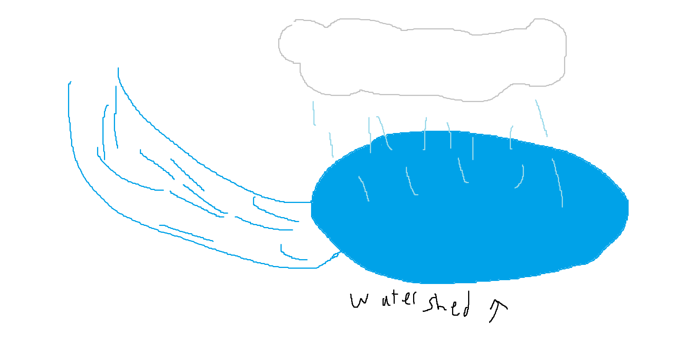

Water cycle
The water cycle is the movement of water on Earth. It starts as normal liquid water on the ground. As the heat from the sun reaches the water, it evaporates creating water vapor. Since the water vapor is lighter than air, it rises. The air high up is colder than normal, so the water vapor cools down turning into clouds. As clouds get denser and denser with more liquid water, it starts raining or depending on the conditions, hailing, snowing etc. The precipitation gets stored in a watershed where it may evaporate again later.

Water sheds
Water sheds are where the precipitation is stored from the water cycle.

Here are some examples of real life watersheds
- Mississippi River Watershed
- Chesapeake Bay Watershed
- Amazon River Watershed
- Colorado River Watershed
- Great Lakes Watershed
- Mekong River Watershed
Groundwater and soil permeability
Groundwater
Groundwater is the liquid water from precipitation that is stored underground in aquifers.